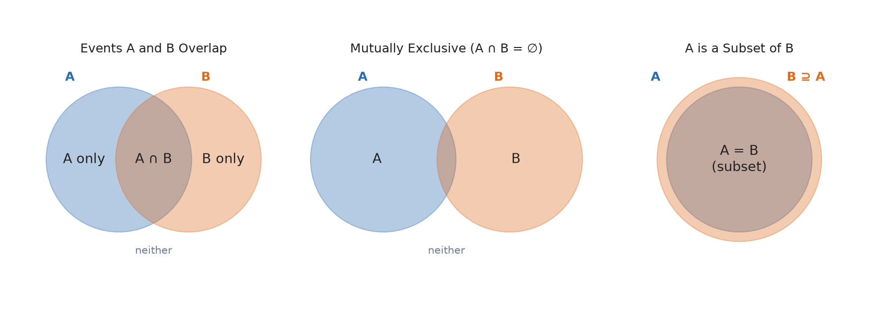
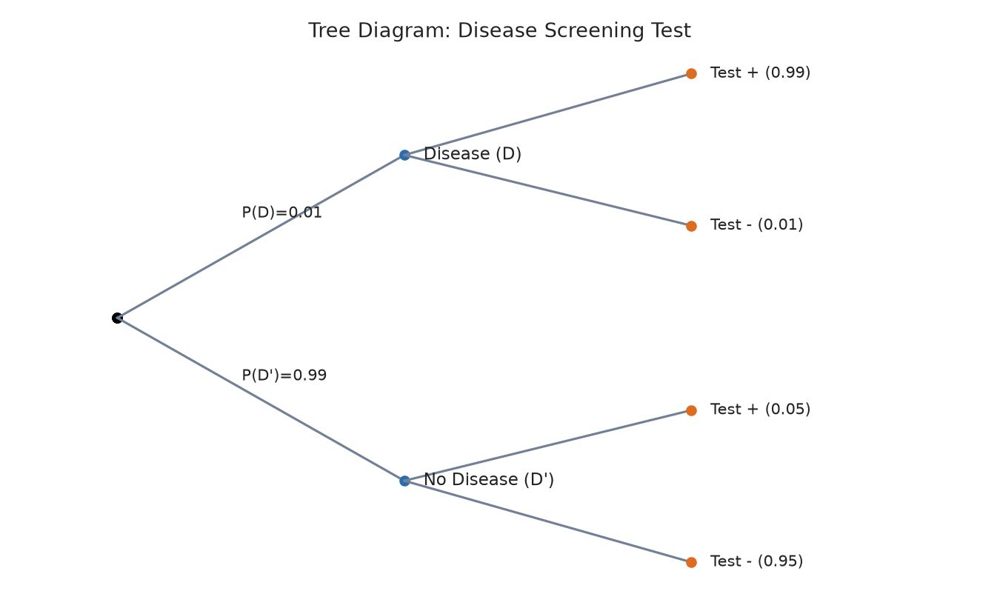

Part I developed tools for summarizing data that has already been collected. Beginning here in Part II, we build the mathematical language needed to describe uncertainty before data is collected — which is exactly what is needed to say how much confidence a sample-based conclusion deserves. This chapter introduces the basic vocabulary and rules of probability: sample spaces, events, and the rules for combining probabilities.
7.1 Sample Spaces and Events
Definition
A random experiment is any process with an uncertain outcome that can, in principle, be repeated. The sample space, denoted S, is the set of all possible outcomes of a random experiment. An event is any subset of the sample space — a collection of one or more outcomes.
Example 7.1
Rolling a single six-sided die is a random experiment with sample space S = {1, 2, 3, 4, 5, 6}. The event "rolling an even number" is the subset E = {2, 4, 6}. The event "rolling a number greater than 4" is the subset F = {5, 6}.
Definition
The probability of an event A, written P(A), is a number between 0 and 1 (inclusive) that measures how likely A is to occur. P(A) = 0 means A is impossible; P(A) = 1 means A is certain.
When every outcome in a finite sample space is equally likely (as with a fair die or a fair coin), probability can be computed directly:
P(A) = (number of outcomes in A) / (number of outcomes in S)
This "classical" approach does not work when outcomes are not equally likely (a loaded die, or a real-world event like "it rains tomorrow"); Section 7.2 develops the general rules that apply regardless.
7.2 The Axioms and Basic Rules of Probability
Three basic facts, sometimes called the axioms of probability, underlie everything else in this chapter:
0 ≤ P(A) ≤ 1 for any event A.
P(S) = 1 — some outcome in the sample space always occurs.
If A and B cannot both occur (they are mutually exclusive, or disjoint), then P(A or B) = P(A) + P(B).
Definition
The complement of event A, written A′ (or Ac), is the event that A does not occur. Because A and A′ together account for the entire sample space and cannot both happen:
P(A′) = 1 − P(A)
The complement rule is often the fastest route to an answer when "at least one" is involved — direct calculation of "at least one" events can require summing many cases, while their complement ("none") is often a single, simple calculation.
Example 7.2
A fair coin is flipped 4 times. What is the probability of getting at least one heads?
Direct calculation would require adding the probabilities of exactly 1, 2, 3, and 4 heads. Instead, use the complement: "at least one heads" is the complement of "zero heads" (all tails).
Definition
The union of events A and B, written A ∪ B (read "A or B"), is the event that A occurs, B occurs, or both. The intersection, written A ∩ B (read "A and B"), is the event that both A and B occur.

Figure 7.1 — Venn diagrams for two overlapping events (left), mutually exclusive events with no overlap (center), and a subset relationship (right).
The general addition rule
When A and B can overlap, simply adding P(A) + P(B) double-counts the outcomes in the overlap A ∩ B. The general addition rule corrects for this:
P(A ∪ B) = P(A) + P(B) − P(A ∩ B)
When A and B are mutually exclusive, P(A ∩ B) = 0, and this reduces to the simple addition rule from Section 7.2.
Example 7.3
Among 100 students, 40 take Statistics, 30 take Economics, and 15 take both. What is the probability a randomly selected student takes Statistics or Economics?
Definition
The conditional probability of A given B, written P(A | B), is the probability that A occurs, given the information that B has already occurred:
P(A | B) = P(A ∩ B) / P(B), provided P(B) > 0
Conditioning on B effectively shrinks the sample space down to just the outcomes where B is true, and asks what fraction of those outcomes also satisfy A. Chapter 8 is devoted entirely to conditional probability, independence, and their applications (including Bayes' theorem); this section previews just the definition so that it can be used immediately in Section 7.5.
Example 7.4
Using Example 7.3's 100 students: given that a student takes Statistics, what is the probability they also take Economics?
Notice this differs from the plain (unconditional) probability of taking Economics, 0.30 — knowing a student takes Statistics has changed the probability they also take Economics, a first hint of the idea of dependence between events, developed fully in Chapter 8.
7.5 The Multiplication Rule
Rearranging the definition of conditional probability gives the general multiplication rule, used to find the probability that two events both occur:
P(A ∩ B) = P(A) × P(B | A)
Independent events
Definition
Two events A and B are independent if the occurrence of one does not change the probability of the other: P(A | B) = P(A) (equivalently, P(B | A) = P(B)).
For independent events, the multiplication rule simplifies, since knowing B occurred tells us nothing new about A:
P(A ∩ B) = P(A) × P(B), if A and B are independent
Common Pitfall: Independent ≠ Mutually Exclusive
These two ideas are frequently confused, but they are almost opposites. Mutually exclusive events (Section 7.2) can never happen together, which means learning that one occurred tells you the other definitely did not — the strongest possible form of dependence, not independence. Two events with positive probability cannot be both mutually exclusive and independent.
Example 7.5
A fair coin is flipped and a fair die is rolled. These are independent (the coin has no influence on the die). What is the probability of getting heads and rolling a 6?
A tree diagram organizes a multi-stage random process into branches, with each branch labeled by a (conditional) probability. Multiplying probabilities along a path from the start to an outcome gives the probability of that entire sequence of events — a direct visual application of the multiplication rule.

Figure 7.2 — A tree diagram for a diagnostic screening test. A rare disease has prevalence P(D) = 0.01. The test correctly detects disease 99% of the time (a "true positive" rate) but also has a 5% false-positive rate among healthy people.
Example 7.6
Using Figure 7.2, what is the probability that a random person tests positive and actually has the disease?
What is the overall probability of testing positive, regardless of true disease status? Add the probabilities of both paths that lead to a positive test:
Notice that most positive tests (0.0495 out of 0.0594, or about 83%) come from healthy people who tested positive by chance — a surprising and important result for a rare disease that Chapter 8's development of Bayes' theorem will explain systematically.
Chapter 7 Summary
A sample space lists all possible outcomes of a random experiment; an event is any subset of outcomes.
Probabilities are between 0 and 1; the probability of the whole sample space is 1; and the complement rule, P(A′) = 1 − P(A), often simplifies "at least one" problems.
The general addition rule, P(A ∪ B) = P(A) + P(B) − P(A ∩ B), avoids double-counting overlapping events; it simplifies when events are mutually exclusive.
Conditional probability, P(A|B) = P(A ∩ B)/P(B), updates the probability of A given that B is known to have occurred.
The multiplication rule, P(A ∩ B) = P(A)P(B|A), simplifies to P(A)P(B) when A and B are independent; independence and mutual exclusivity are distinct (nearly opposite) concepts.
Tree diagrams organize multi-stage random processes and apply the multiplication and addition rules visually.
Exercises
A standard deck of 52 playing cards has 13 cards in each of 4 suits. What is the probability of drawing a card that is a heart or a face king (i.e., the event "heart" union the event "king")? (There are 13 hearts and 4 kings, with 1 card — the king of hearts — in both.)
Using the complement rule, find the probability of rolling at least one 6 in four rolls of a fair die.
In a group of 200 patients, 120 have high blood pressure, 80 have high cholesterol, and 50 have both. Find the probability that a randomly chosen patient has high blood pressure or high cholesterol, and the conditional probability that a patient has high cholesterol given that they have high blood pressure.
Are "high blood pressure" and "high cholesterol" from Exercise 3 independent? Justify your answer by comparing P(cholesterol) to P(cholesterol | blood pressure).
Two events A and B satisfy P(A) = 0.3 and P(B) = 0.4, and A and B are mutually exclusive. Can A and B also be independent? Explain using the definitions in Sections 7.2 and 7.5.
P(cholesterol) = 80/200 = 0.40. P(cholesterol | blood pressure) ≈ 0.417 (from Exercise 3). Since these are not equal, the events are not independent — having high blood pressure is associated with a slightly higher chance of also having high cholesterol in this sample.
Exercise 5
No. If A and B are mutually exclusive with both probabilities positive, then P(A ∩ B) = 0, but independence would require P(A ∩ B) = P(A)P(B) = 0.3 × 0.4 = 0.12 ≠ 0. Since these two required values of P(A ∩ B) conflict, A and B cannot be both mutually exclusive and independent (matching the Common Pitfall box in Section 7.5).